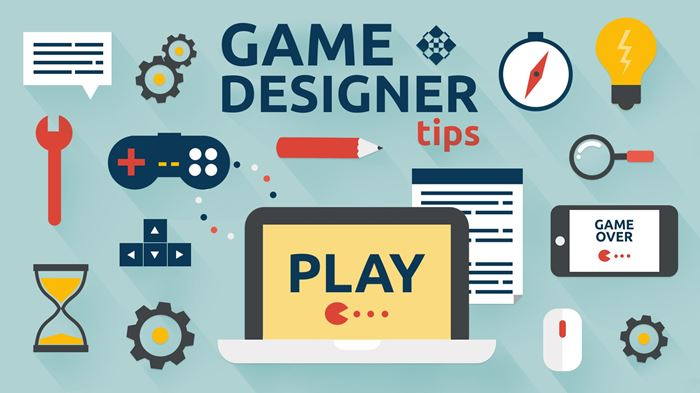
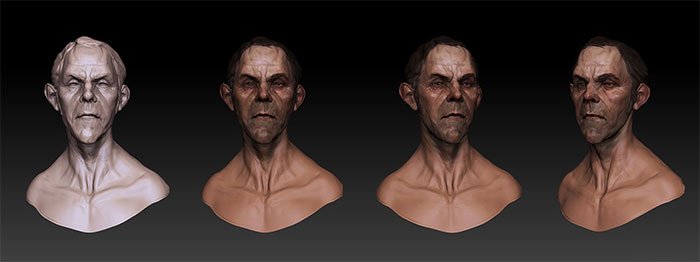

Game Designer :
Le concepteur de jeu suit le chef de projet, et une fois que la cible du public du jeu vidéo est déterminée, le type de jeu et le budget sont déterminés. Ensuite, il conçoit le gameplay, c'est-à-dire les règles du jeu, les fonctions à utiliser et toutes les possibilités d'interaction offertes au joueur.
Le travail du game designer est de transformer le script écrit en un jeu virtuel avec des personnages, des scènes et des situations .
Le game designer commence par rédiger les spécifications du jeu et a détaillé toutes les recommandations suivies pour toute l'équipe de production. Parce que créer un jeux est un vrai travail d'équipe ! Il doit négocier en permanence avec les concepteurs , les animateurs, les graphistes, les illustrateurs sonores (sound designers) et les testeurs
En surveillant constamment les coûts de développement et en respectant les exigences des clients, les concepteurs de jeux sont intervenus dans la logique et l'interactivité du jeu tout au long du processus de développement, créant ainsi un monde intéressant et fascinant.
À lui de construire des énigmes, d'imaginer le comportement du héros, de découvrir de nouveaux défis ... Les choses doivent changer, et le joueur doit être fixé sur sa console !
Il participe également à la conception globale. Pour cela, il doit montrer son imagination et sa superbe technique. Il possède des connaissances approfondies en infographie et en logiciels de modélisation 3D. Il maîtrise également plusieurs langages de programmation et de balisage.
Ce métier demande du bon sens, de la rigueur, d'excellentes capacités d'analyse, une créativité hors pair, une participation accrue sur les réseaux sociaux ... et une excellente résistance au stress!
Entre 1 600 € et 2 000 € brut par mois pour un game designer débutant, jusqu’à plus de 3 500 € pour un game designer expérimenté.
Sources: https://www.cidj.com/metiers/game-designer-lead-game-designer
https://metier-07.webself.net/contact
Directeur artistique :
Dans le domaine du design, le directeur artistique produit des supports de communication visuelle sous forme de dessins et graphiques (mises en page, réglages de volume).
Le DA peut également créer des messages publicitaires sous une forme écrite, graphique, audiovisuelle. Plusieurs projets sont élaborés. Un projet est concrétisé soit par une maquette, soit par un "rough" ou par un "story-board".
Le projet est soumis au client. Afin de convaincre le client de l'efficacité du projet, le directeur artistique doit rationaliser sa méthode et trouver l'argument le plus fort.
Enfin, la dernière étape est le suivi technique. A ce stade, le directeur artistique gère un groupe de graphistes, photographes, illustrateurs, réalisateurs, etc.
Il coopère à la préparation et à la production de documents pour les adapter au point de vue de l'activité définie. Il sélectionne les caractères imprimés du texte et supervise la composition de la photo. Il communique toutes les informations nécessaires à la finalisation du modèle au fabricant du modèle avant l'impression.

L'activité se déroule au bureau ou en atelier, individuellement ou en groupe, à domicile ou en entreprise: atelier de rédaction (édition ou impression), studio de design, agence de publicité.
L'imagination, la créativité, la curiosité, l'esthétique et le sens de la peinture, l'observation et l'intuition sont des qualités essentielles.
La polyvalence de la technologie est combinée avec le don de l'art. Comme pour toute idée créative, le directeur artistique doit rester en contact afin d'avoir une bonne idée de son temps afin de saisir son évolution et ses tendances.
Le salaire de débutant est d’environ 2 500 € brut par mois.
Sources: https://www.cidj.com/metiers/directrice-artistique-directeur-artistique
https://www.afjv.com/news/7059_guide-des-metiers-directeur-artistique.htm
Développeur informatique :
Les développeurs informatiques ont rédigé un cahier des charges, répertorié les besoins des utilisateurs et décrit les solutions techniques envisagées.
Lors de la rédaction du programme, il utilise des progiciels qu’il adapte aux besoins spécifiques du projet. Ces logiciels de travail lui permettent d’orienter son activité de plus en plus vers l’analyse.
A la fin, il effectue des tests puis participe au lancement des applications. Il réalise également les notices techniques ainsi que les guides pour les utilisateurs.
Les qualités indispensables : rigueur, organisation et sens de la méthode, mais aussi aptitude au travail en équipe, rapidité d'exécution, facilité d'adaptation. Sans oublier l'anglais (au mininimum la compréhension écrite).
Les salaires, plutôt élevés dans le secteur de l’informatique, varient en fonction du niveau de formation, de la mission précise et du secteur d’activité. En début de carrière un développeur peut compter sur un salaire de 2 100 € brut par mois. Un salaire de plus de 3 500 € n'est pas à exclure par la suite.
Sources: https://www.cidj.com/metiers/developpeur-developpeuse-informatique
Technologie vecteur créé par vectorjuice - fr.freepik.com